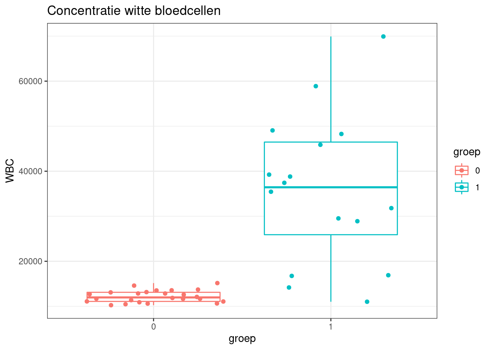

Concentratie witte
bloedcellen bij ratten
Test 2023-2024
De data die we hier beschouwen zijn afkomstig van een studie waarbij
men een behandelde groep van 16 ratten met de pertussis bacteria heeft
geïnfecteerd. Men mat vervolgens de concentratie van de witte
bloedcellen (WBC) in aantal per kubieke mm. In een controlegroep van 24
ratten werd eveneens de concentratie van witte bloedcellen gemeten.
De data is beschikbaar in het bestand wbcon.dat. Dit bestand bevat
twee variabelen, de variabele WBC die de concentratie witte
bloedcellen weergeeft en de variabele groep die twee
mogelijke waarden kan aannemen:
- 0: de rat behoort tot de controlegroep
- 1: de rat behoort tot de behandelde groep
library(ggplot2)
library(dplyr)
##
## Attaching package: 'dplyr'
## The following objects are masked from 'package:stats':
##
## filter, lag
## The following objects are masked from 'package:base':
##
## intersect, setdiff, setequal, union
#install.packages("tidyr")
library(tidyr)
Lees de dataset wbcon.dat in.
wbcon <- read.table("https://raw.githubusercontent.com/statOmics/statistiekBasisCursusData/master/practicum3/wbcon.dat", header = TRUE)
Data-exploratie
Is de gemiddelde
concentratie witte bloedcellen groter in de controlegroep of in de
behandelde groep?
wbSum <- wbcon %>%
group_by(groep) %>%
summarize_at("WBC",
list(mean=~mean(.,na.rm=TRUE),
sd=~sd(.,na.rm=TRUE),
n=function(x) x%>%is.na%>%`!`%>%sum)
) %>%
mutate(se = sd/sqrt(n))
wbSum
Na pertrussis infectie verdriedubbelt het aantal witte
bloedcellen/mm\(^3\). Maar is dit
verschil significant?
Figuur van de ruwe
gegevens
wbcon$groep <- as.factor(wbcon$groep) # groep is integer, we willen een factor
boxplot <- ggplot(data=wbcon,aes(x=groep, y=WBC, col=groep)) +
geom_boxplot(outlier.shape=NA) +
geom_jitter() +
theme_bw() +
ggtitle("Concentratie witte bloedcellen")
boxplot

Op de boxplots zien we dat de variantie tussen beide groepen erg
verschillend is.
Aannames voor de
statistische toets
Welke test moeten we uitvoeren om na te gaan of de gemiddelde
concentratie witte bloedcellen verschillend is in de controle versus de
behandelde groep? Welke voorwaarden moeten we hiervoor nagaan?
Het experiment werd opgezet met 40 ratten. 16 ratten werden at random
toegewezen aan de behandelingsgroep en de overige ratten kregen een
controle behandeling. Dit betekent dat de data ongepaard zijn en dat we
dus een ongepaarde two sample t-test zullen uitvoeren. De voorwaarden
voor deze test zijn de volgende:
- onafhankelijke observaties
- concentratie witte bloedcellen in elke groep normaal verdeeld
- gelijkheid van variantie
Onafhankelijkheid kan worden verkregen door studiedesign. We gaan
ervan uit dat de ratten die betrokken zijn in de studie onafhankelijk
werden getrokken uit de populatie van ratten.
Om na te gaan of de concentratie witte bloedcellen in beide groepen
normaal verdeeld zijn, maken we 2 QQ-plots.
qqplot <- wbcon %>%
ggplot(aes(sample=WBC)) +
geom_qq() +
geom_qq_line() +
facet_wrap(~groep)
qqplot
Meer informatie over QQ-plots kan je terugvinden in kennisclip “4.4
De Normale benadering van gegevens” in de statistiekcursus (dodona,
html,
youtube).
Uit de boxplot bleek dat de variantie van de gegevens niet gelijk
was. Daarom kunnen we geen gebruik maken van de gepoolde
variantieschatter en voeren we een Welch-modified two sample t-test
uit.
Hypothesis en
statistische toets
Formuleer de nul- en alternatieve hypothese voor een tweezijdige
test. Voer deze test uit op het 5% significantieniveau.
Nul- en alternatieve
hypothese
We willen nagaan of de gemiddelde concentratie witte bloedcellen in
de controlegroep significant verschilt van de gemiddelde concentratie
witte bloedcellen in behandelde groep. De nul- en alternatieve hypothese
horende voor het toetsen van deze onderzoeksvraag zijn:
Nulhypothese
- In symbolen: \(H_0: \mu_0 =
\mu_1\)
- In woorden: \(H_0:\) de
gemiddelde concentratie witte bloedcellen in controlegroep is gelijk aan
de gemiddelde concentratie witte bloedcellen in behandelde groep.
Alternatieve hypothese
- In symbolen : \(H_A: \mu_0 \neq
\mu_1\)
- In woorden: \(H_A:\) de
gemiddelde concentratie witte bloedcellen in controlegroep is
verschillend van de gemiddelde concentratie witte bloedcellen in
behandelde groep.
met \(\mu_0\): het
populatiegemiddelde van de concentratie witte bloedcellen bij ratten na
behandeling met de controle en \(\mu_1\): het populatiegemiddelde van de
concentratie witte bloedcellen bij ratten na infectie met de pertrussis
bacteriën.
Tweezijdige two
sample t-test met ongelijkheid van variantie
Bij de t-test functie is het argument var.equal default
var.equal = FALSE zodat de Welch t-test wordt uitgevoerd
waarbij wordt gewerkt met een afzonderlijke variantieschatter per
groep.
test <- t.test(WBC ~ groep,wbcon)
test
##
## Welch Two Sample t-test
##
## data: WBC by groep
## t = -5.7114, df = 15.132, p-value = 3.984e-05
## alternative hypothesis: true difference in means between group 0 and group 1 is not equal to 0
## 95 percent confidence interval:
## -32311.32 -14758.47
## sample estimates:
## mean in group 0 mean in group 1
## 12215.92 35750.81
Interpretatie
De t-test heeft een p-waarde van 4e-05. Deze p-waarde is veel kleiner
dan het vooropgestelde significantieniveau \(\alpha=0.05\). Hierdoor kunnen we de
nulhypothese kunnen verwerpen op het 5% significantieniveau. Dit
betekent dat concentratie witte bloedcellen gemiddeld significant
verschillend is tussen ratten die de controle behandeling kregen en
ratten die geïnfecteerd werden met pertrussis.
De t-test geeft ook een 95% betrouwbaarheidsinterval weer van -32311
tot -14758.
We hebben dus geschat dat het werkelijke gemiddelde verschil
in concentratie witte bloedcellen tussen de controle groep en de
behandelde groep met 95% kans tussen -32311 bloedcellen/mm\(^3\) en -14758 ligt.
Conclusie
De gemiddelde witte bloedcelconcentratie is extreem significant
verschillend tussen ratten die geïnfecteerd worden met pertrussis en
ratten die de controle behandeling ondergaan (p << 0.001). De
witte bloedcelconcentratie is gemiddeld 23535 bloedcellen/mm\(^3\) hoger bij ratten na infectie met
pertrussis dan bij ratten die de controlebehandeling ondergaan (95% BI
[14758, 32311]).
LS0tCnRpdGxlOiAiUHJhY3RpY3VtIDI6IFdpdHRlIGJsb2VkY2VsbGVuIgphdXRob3I6ICJ4eHggZW4gTGlldmVuIENsZW1lbnQiCmRhdGU6ICJzdGF0T21pY3MsIEdoZW50IFVuaXZlcnNpdHkgKGh0dHBzOi8vc3RhdG9taWNzLmdpdGh1Yi5pbykiCgpvdXRwdXQ6CiAgaHRtbF9kb2N1bWVudDoKICAgIGNvZGVfZG93bmxvYWQ6IHllcwogICAgaGlnaGxpZ2h0OiB0YW5nbwogICAgbnVtYmVyX3NlY3Rpb25zOiB5ZXMKICAgIHRoZW1lOiBjb3NtbwogICAgdG9jOiB5ZXMKICAgIHRvY19mbG9hdDogeWVzCiAgcGRmX2RvY3VtZW50OgogICAgdG9jOiB5ZXMKICB3b3JkX2RvY3VtZW50OgogICAgdG9jOiB5ZXMKLS0tCgoKPGEgcmVsPSJsaWNlbnNlIiBocmVmPSJodHRwczovL2NyZWF0aXZlY29tbW9ucy5vcmcvbGljZW5zZXMvYnktbmMtc2EvNC4wIj48aW1nIGFsdD0iQ3JlYXRpdmUgQ29tbW9ucyBMaWNlbnNlIiBzdHlsZT0iYm9yZGVyLXdpZHRoOjAiIHNyYz0iaHR0cHM6Ly9pLmNyZWF0aXZlY29tbW9ucy5vcmcvbC9ieS1uYy1zYS80LjAvODh4MzEucG5nIiAvPjwvYT4KCiMgQ29uY2VudHJhdGllIHdpdHRlIGJsb2VkY2VsbGVuIGJpaiByYXR0ZW4KVGVzdCAyMDIzLTIwMjQKCkRlIGRhdGEgZGllIHdlIGhpZXIgYmVzY2hvdXdlbiB6aWpuIGFma29tc3RpZyB2YW4gZWVuIHN0dWRpZSB3YWFyYmlqIG1lbiBlZW4gYmVoYW5kZWxkZSBncm9lcCB2YW4gMTYgcmF0dGVuIG1ldCBkZSBwZXJ0dXNzaXMgYmFjdGVyaWEgaGVlZnQgZ2XDr25mZWN0ZWVyZC4gTWVuIG1hdCB2ZXJ2b2xnZW5zIGRlIGNvbmNlbnRyYXRpZSB2YW4gZGUgd2l0dGUgYmxvZWRjZWxsZW4gKFdCQykgaW4gYWFudGFsIHBlciBrdWJpZWtlIG1tLiBJbiBlZW4gY29udHJvbGVncm9lcCB2YW4gMjQgcmF0dGVuIHdlcmQgZXZlbmVlbnMgZGUgY29uY2VudHJhdGllIHZhbiB3aXR0ZSBibG9lZGNlbGxlbiBnZW1ldGVuLgoKRGUgZGF0YSBpcyBiZXNjaGlrYmFhciBpbiBoZXQgYmVzdGFuZCB3YmNvbi5kYXQuIERpdCBiZXN0YW5kIGJldmF0IHR3ZWUgdmFyaWFiZWxlbiwgZGUgdmFyaWFiZWxlIFdCQyBkaWUgZGUgYGNvbmNlbnRyYXRpZWAgd2l0dGUgYmxvZWRjZWxsZW4gd2VlcmdlZWZ0IGVuIGRlIHZhcmlhYmVsZSBgZ3JvZXBgIGRpZSB0d2VlIG1vZ2VsaWprZSB3YWFyZGVuIGthbiBhYW5uZW1lbjoKCi0gMDogZGUgcmF0IGJlaG9vcnQgdG90IGRlIGNvbnRyb2xlZ3JvZXAKLSAxOiBkZSByYXQgYmVob29ydCB0b3QgZGUgYmVoYW5kZWxkZSBncm9lcAoKYGBge3Igc2V0dXAsIGluY2x1ZGU9RkFMU0V9CmtuaXRyOjpvcHRzX2NodW5rJHNldChlY2hvID0gVFJVRSkKYGBgCgpgYGB7cn0KbGlicmFyeShnZ3Bsb3QyKQpsaWJyYXJ5KGRwbHlyKQojaW5zdGFsbC5wYWNrYWdlcygidGlkeXIiKQpsaWJyYXJ5KHRpZHlyKQpgYGAKCkxlZXMgZGUgZGF0YXNldCB3YmNvbi5kYXQgaW4uCgpgYGB7cn0Kd2Jjb24gPC0gcmVhZC50YWJsZSgiaHR0cHM6Ly9yYXcuZ2l0aHVidXNlcmNvbnRlbnQuY29tL3N0YXRPbWljcy9zdGF0aXN0aWVrQmFzaXNDdXJzdXNEYXRhL21hc3Rlci9wcmFjdGljdW0zL3diY29uLmRhdCIsIGhlYWRlciA9IFRSVUUpCmBgYAoKIyBEYXRhLWV4cGxvcmF0aWUgCgojIyBJcyBkZSBnZW1pZGRlbGRlIGNvbmNlbnRyYXRpZSB3aXR0ZSBibG9lZGNlbGxlbiBncm90ZXIgaW4gZGUgY29udHJvbGVncm9lcCBvZiBpbiBkZSBiZWhhbmRlbGRlIGdyb2VwPwoKYGBge3J9CndiU3VtIDwtIHdiY29uICU+JQogIGdyb3VwX2J5KGdyb2VwKSAlPiUKICBzdW1tYXJpemVfYXQoIldCQyIsIAogICAgICAgICAgICAgICBsaXN0KG1lYW49fm1lYW4oLixuYS5ybT1UUlVFKSwKICAgICAgICAgICAgICAgICAgICBzZD1+c2QoLixuYS5ybT1UUlVFKSwKICAgICAgICAgICAgICAgICAgICBuPWZ1bmN0aW9uKHgpIHglPiVpcy5uYSU+JWAhYCU+JXN1bSkKICAgICAgICAgICAgICAgICkgJT4lCiAgbXV0YXRlKHNlID0gc2Qvc3FydChuKSkKd2JTdW0KYGBgCgpOYSBwZXJ0cnVzc2lzIGluZmVjdGllIHZlcmRyaWVkdWJiZWx0IGhldCBhYW50YWwgd2l0dGUgYmxvZWRjZWxsZW4vbW0kXjMkLiBNYWFyIGlzIGRpdCB2ZXJzY2hpbCBzaWduaWZpY2FudD8KCiMjIEZpZ3V1ciB2YW4gZGUgcnV3ZSBnZWdldmVucyAKCmBgYHtyfQp3YmNvbiRncm9lcCA8LSBhcy5mYWN0b3Iod2Jjb24kZ3JvZXApICMgZ3JvZXAgaXMgaW50ZWdlciwgd2Ugd2lsbGVuIGVlbiBmYWN0b3IKYm94cGxvdCA8LSBnZ3Bsb3QoZGF0YT13YmNvbixhZXMoeD1ncm9lcCwgeT1XQkMsIGNvbD1ncm9lcCkpICsgCiAgZ2VvbV9ib3hwbG90KG91dGxpZXIuc2hhcGU9TkEpICsgCiAgZ2VvbV9qaXR0ZXIoKSArCiAgdGhlbWVfYncoKSArIAogIGdndGl0bGUoIkNvbmNlbnRyYXRpZSB3aXR0ZSBibG9lZGNlbGxlbiIpCgpib3hwbG90IApgYGAKCk9wIGRlIGJveHBsb3RzIHppZW4gd2UgZGF0IGRlIHZhcmlhbnRpZSB0dXNzZW4gYmVpZGUgZ3JvZXBlbiBlcmcgdmVyc2NoaWxsZW5kIGlzLgoKIyBBYW5uYW1lcyB2b29yIGRlIHN0YXRpc3Rpc2NoZSB0b2V0cwoKV2Vsa2UgdGVzdCBtb2V0ZW4gd2UgdWl0dm9lcmVuIG9tIG5hIHRlIGdhYW4gb2YgZGUgZ2VtaWRkZWxkZSBjb25jZW50cmF0aWUgd2l0dGUgYmxvZWRjZWxsZW4gdmVyc2NoaWxsZW5kIGlzIGluIGRlIGNvbnRyb2xlIHZlcnN1cyBkZSBiZWhhbmRlbGRlIGdyb2VwPyBXZWxrZSB2b29yd2FhcmRlbiBtb2V0ZW4gd2UgaGllcnZvb3IgbmFnYWFuPwoKSGV0IGV4cGVyaW1lbnQgd2VyZCBvcGdlemV0IG1ldCA0MCByYXR0ZW4uIDE2IHJhdHRlbiB3ZXJkZW4gYXQgcmFuZG9tIHRvZWdld2V6ZW4gYWFuIGRlIGJlaGFuZGVsaW5nc2dyb2VwIGVuIGRlIG92ZXJpZ2UgcmF0dGVuIGtyZWdlbiBlZW4gY29udHJvbGUgYmVoYW5kZWxpbmcuIERpdCBiZXRla2VudCBkYXQgZGUgZGF0YSBvbmdlcGFhcmQgemlqbiBlbiBkYXQgd2UgZHVzIGVlbiBvbmdlcGFhcmRlIHR3byBzYW1wbGUgdC10ZXN0IHp1bGxlbiB1aXR2b2VyZW4uIERlIHZvb3J3YWFyZGVuIHZvb3IgZGV6ZSB0ZXN0IHppam4gZGUgdm9sZ2VuZGU6CgotIG9uYWZoYW5rZWxpamtlIG9ic2VydmF0aWVzCi0gY29uY2VudHJhdGllIHdpdHRlIGJsb2VkY2VsbGVuIGluIGVsa2UgZ3JvZXAgbm9ybWFhbCB2ZXJkZWVsZAotIGdlbGlqa2hlaWQgdmFuIHZhcmlhbnRpZQoKT25hZmhhbmtlbGlqa2hlaWQga2FuIHdvcmRlbiB2ZXJrcmVnZW4gZG9vciBzdHVkaWVkZXNpZ24uIFdlIGdhYW4gZXJ2YW4gdWl0IGRhdCBkZSByYXR0ZW4gZGllIGJldHJva2tlbiB6aWpuIGluIGRlIHN0dWRpZSBvbmFmaGFua2VsaWprIHdlcmRlbiBnZXRyb2trZW4gdWl0IGRlIHBvcHVsYXRpZSB2YW4gcmF0dGVuLgoKT20gbmEgdGUgZ2FhbiBvZiBkZSBjb25jZW50cmF0aWUgd2l0dGUgYmxvZWRjZWxsZW4gaW4gYmVpZGUgZ3JvZXBlbiBub3JtYWFsIHZlcmRlZWxkIHppam4sIG1ha2VuIHdlIDIgUVEtcGxvdHMuCgpgYGB7cn0KcXFwbG90IDwtIHdiY29uICU+JSAKICBnZ3Bsb3QoYWVzKHNhbXBsZT1XQkMpKSArCiAgZ2VvbV9xcSgpICsKICBnZW9tX3FxX2xpbmUoKSArCiAgZmFjZXRfd3JhcCh+Z3JvZXApCnFxcGxvdApgYGAKCk1lZXIgaW5mb3JtYXRpZSBvdmVyIFFRLXBsb3RzIGthbiBqZSB0ZXJ1Z3ZpbmRlbiBpbiBrZW5uaXNjbGlwICI0LjQgRGUgTm9ybWFsZSBiZW5hZGVyaW5nIHZhbiBnZWdldmVucyIgaW4gZGUgc3RhdGlzdGlla2N1cnN1cyAoW2RvZG9uYV0oaHR0cHM6Ly9kb2RvbmEudWdlbnQuYmUvZW4vY291cnNlcy80Njkvc2VyaWVzLzUwMjQvYWN0aXZpdGllcy8xNDYzNzQ5OTY3LyksIFtodG1sXShodHRwczovL3N0YXRvbWljcy5naXRodWIuaW8vc2JjMjEvY2hhcF9kZXNjcmliZS5odG1sI3NlYzpub3JtYWwpLCBbeW91dHViZV0oaHR0cHM6Ly95b3V0dS5iZS9fT0x0Z2ZhZ01UZykpLgoKVWl0IGRlIGJveHBsb3QgYmxlZWsgZGF0IGRlIHZhcmlhbnRpZSB2YW4gZGUgZ2VnZXZlbnMgbmlldCBnZWxpamsgd2FzLiAKRGFhcm9tIGt1bm5lbiB3ZSBnZWVuIGdlYnJ1aWsgbWFrZW4gdmFuIGRlIGdlcG9vbGRlIHZhcmlhbnRpZXNjaGF0dGVyIGVuIHZvZXJlbiB3ZSBlZW4gV2VsY2gtbW9kaWZpZWQgdHdvIHNhbXBsZSB0LXRlc3QgdWl0LiAKCiMgSHlwb3RoZXNpcyBlbiBzdGF0aXN0aXNjaGUgdG9ldHMKCkZvcm11bGVlciBkZSBudWwtIGVuIGFsdGVybmF0aWV2ZSBoeXBvdGhlc2Ugdm9vciBlZW4gdHdlZXppamRpZ2UgdGVzdC4gVm9lciBkZXplIHRlc3QgdWl0IG9wIGhldCA1JSBzaWduaWZpY2FudGllbml2ZWF1LgoKIyMgTnVsLSBlbiBhbHRlcm5hdGlldmUgaHlwb3RoZXNlIAoKV2Ugd2lsbGVuIG5hZ2FhbiBvZiBkZSBnZW1pZGRlbGRlIGNvbmNlbnRyYXRpZSB3aXR0ZSBibG9lZGNlbGxlbiBpbiBkZSBjb250cm9sZWdyb2VwIHNpZ25pZmljYW50IHZlcnNjaGlsdCB2YW4gZGUgZ2VtaWRkZWxkZSBjb25jZW50cmF0aWUgd2l0dGUgYmxvZWRjZWxsZW4gaW4gYmVoYW5kZWxkZSBncm9lcC4gRGUgbnVsLSBlbiBhbHRlcm5hdGlldmUgaHlwb3RoZXNlIGhvcmVuZGUgdm9vciBoZXQgdG9ldHNlbiB2YW4gZGV6ZSBvbmRlcnpvZWtzdnJhYWcgemlqbjoKCk51bGh5cG90aGVzZQoKLSAqSW4gc3ltYm9sZW4qOiAkSF8wOiBcbXVfMCA9IFxtdV8xJAotICpJbiB3b29yZGVuKjogJEhfMDokIGRlIGdlbWlkZGVsZGUgY29uY2VudHJhdGllIHdpdHRlIGJsb2VkY2VsbGVuIGluIGNvbnRyb2xlZ3JvZXAgaXMgZ2VsaWprIGFhbiBkZSBnZW1pZGRlbGRlIGNvbmNlbnRyYXRpZSB3aXR0ZSBibG9lZGNlbGxlbiBpbiBiZWhhbmRlbGRlIGdyb2VwLgoKCkFsdGVybmF0aWV2ZSBoeXBvdGhlc2UKCi0gKkluIHN5bWJvbGVuKiA6ICRIX0E6IFxtdV8wIFxuZXEgXG11XzEkCi0gKkluIHdvb3JkZW4qOiAkSF9BOiQgZGUgZ2VtaWRkZWxkZSBjb25jZW50cmF0aWUgd2l0dGUgYmxvZWRjZWxsZW4gaW4gY29udHJvbGVncm9lcCBpcyB2ZXJzY2hpbGxlbmQgdmFuIGRlIGdlbWlkZGVsZGUgY29uY2VudHJhdGllIHdpdHRlIGJsb2VkY2VsbGVuIGluIGJlaGFuZGVsZGUgZ3JvZXAuCgptZXQgJFxtdV8wJDogaGV0IHBvcHVsYXRpZWdlbWlkZGVsZGUgdmFuIGRlIGNvbmNlbnRyYXRpZSB3aXR0ZSBibG9lZGNlbGxlbiBiaWogcmF0dGVuIG5hIGJlaGFuZGVsaW5nIG1ldCBkZSBjb250cm9sZSBlbiAkXG11XzEkOiAgaGV0IHBvcHVsYXRpZWdlbWlkZGVsZGUgdmFuIGRlIGNvbmNlbnRyYXRpZSB3aXR0ZSBibG9lZGNlbGxlbiBiaWogcmF0dGVuIG5hIGluZmVjdGllIG1ldCBkZSBwZXJ0cnVzc2lzIGJhY3RlcmnDq24uIAoKIyMgVHdlZXppamRpZ2UgdHdvIHNhbXBsZSB0LXRlc3QgbWV0IG9uZ2VsaWpraGVpZCB2YW4gdmFyaWFudGllCgpCaWogZGUgdC10ZXN0IGZ1bmN0aWUgaXMgaGV0IGFyZ3VtZW50IGB2YXIuZXF1YWxgIGRlZmF1bHQgYHZhci5lcXVhbCA9IEZBTFNFYCB6b2RhdCBkZSBXZWxjaCB0LXRlc3Qgd29yZHQgdWl0Z2V2b2VyZCB3YWFyYmlqIHdvcmR0IGdld2Vya3QgbWV0IGVlbiBhZnpvbmRlcmxpamtlIHZhcmlhbnRpZXNjaGF0dGVyIHBlciBncm9lcC4KCmBgYHtyfQp0ZXN0IDwtIHQudGVzdChXQkMgfiBncm9lcCx3YmNvbikKdGVzdApgYGAKCiMjIEludGVycHJldGF0aWUgCkRlIHQtdGVzdCBoZWVmdCBlZW4gcC13YWFyZGUgdmFuIGByIGZvcm1hdCh0ZXN0JHAudmFsdWUsZGlnaXRzPTIpYC4gRGV6ZSBwLXdhYXJkZSBpcyB2ZWVsIGtsZWluZXIgZGFuIGhldCB2b29yb3BnZXN0ZWxkZSBzaWduaWZpY2FudGllbml2ZWF1ICRcYWxwaGE9MC4wNSQuIEhpZXJkb29yIGt1bm5lbiB3ZSBkZSBudWxoeXBvdGhlc2Uga3VubmVuIHZlcndlcnBlbiBvcCBoZXQgNSUgc2lnbmlmaWNhbnRpZW5pdmVhdS4gRGl0IGJldGVrZW50IGRhdCBjb25jZW50cmF0aWUgd2l0dGUgYmxvZWRjZWxsZW4gZ2VtaWRkZWxkIHNpZ25pZmljYW50IHZlcnNjaGlsbGVuZCBpcyB0dXNzZW4gcmF0dGVuIGRpZSBkZSBjb250cm9sZSBiZWhhbmRlbGluZyBrcmVnZW4gZW4gcmF0dGVuIGRpZSBnZcOvbmZlY3RlZXJkIHdlcmRlbiBtZXQgcGVydHJ1c3Npcy4gCgpEZSB0LXRlc3QgZ2VlZnQgb29rIGVlbiA5NSUgYmV0cm91d2JhYXJoZWlkc2ludGVydmFsIHdlZXIgdmFuIGByIGZvcm1hdCh0ZXN0JGNvbmYuaW50WzFdLGRpZ2l0cz0zKWAgdG90IGByIGZvcm1hdCh0ZXN0JGNvbmYuaW50WzJdLGRpZ2l0cz0zKWAuIAoKKipXZSBoZWJiZW4gZHVzIGdlc2NoYXQgZGF0IGhldCB3ZXJrZWxpamtlIGdlbWlkZGVsZGUgdmVyc2NoaWwgaW4gY29uY2VudHJhdGllIHdpdHRlIGJsb2VkY2VsbGVuIHR1c3NlbiBkZSBjb250cm9sZSBncm9lcCBlbiBkZSBiZWhhbmRlbGRlIGdyb2VwIG1ldCA5NSUga2FucyB0dXNzZW4gYHIgZm9ybWF0KHRlc3QkY29uZi5pbnRbMV0sZGlnaXRzPTMpYCBibG9lZGNlbGxlbi9tbSReMyQgZW4gYHIgZm9ybWF0KHRlc3QkY29uZi5pbnRbMl0sZGlnaXRzPTMpYCBsaWd0LioqCgoKIyBDb25jbHVzaWUKCkRlIGdlbWlkZGVsZGUgd2l0dGUgYmxvZWRjZWxjb25jZW50cmF0aWUgaXMgZXh0cmVlbSBzaWduaWZpY2FudCB2ZXJzY2hpbGxlbmQgdHVzc2VuIHJhdHRlbiBkaWUgZ2XDr25mZWN0ZWVyZCB3b3JkZW4gbWV0IHBlcnRydXNzaXMgZW4gcmF0dGVuIGRpZSBkZSBjb250cm9sZSBiZWhhbmRlbGluZyBvbmRlcmdhYW4gKHAgPDwgMC4wMDEpLiAKRGUgd2l0dGUgYmxvZWRjZWxjb25jZW50cmF0aWUgaXMgZ2VtaWRkZWxkIGByIHdiU3VtICU+JSBwdWxsKG1lYW4pICU+JSBkaWZmICU+JSBmb3JtYXQoZGlnaXRzPTMpYCBibG9lZGNlbGxlbi9tbSReMyQgaG9nZXIgYmlqIHJhdHRlbiBuYSBpbmZlY3RpZSBtZXQgcGVydHJ1c3NpcyBkYW4gYmlqIHJhdHRlbiBkaWUgZGUgY29udHJvbGViZWhhbmRlbGluZyBvbmRlcmdhYW4gKDk1JSBCSSBbYHIgLXRlc3QkY29uZi5pbnQgJT4lICBzb3J0ICU+JSBmb3JtYXQoZGlnaXRzPTMpYF0pLiAKCg==